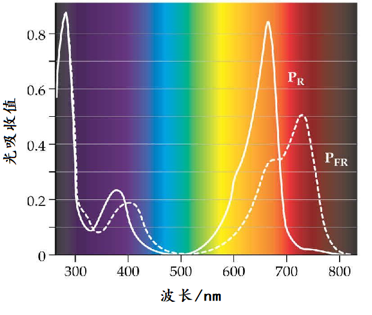
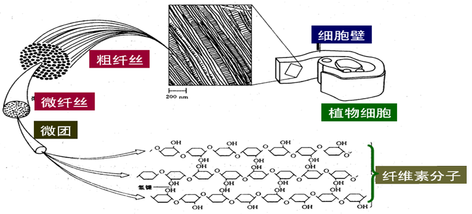
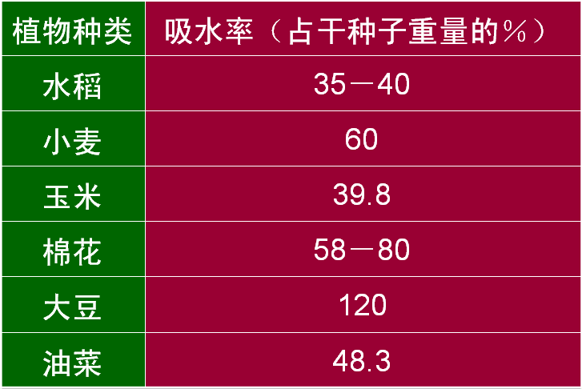

一、种子的萌发和幼苗的形成
种子的结构与类型——从"种皮+胚+胚乳"到"双子叶/单子叶"的差异
种子(seed)是被子植物与裸子植物特有的繁殖器官之一,也是本节"萌发"主题的前提。完整种子由 3 部分组成(讲义 P328):
- 种皮(seed coat)——由珠被(integument)发育,保护胚,控制萌发
- 胚(embryo)——由受精卵(合子)发育,新一代植物的雏形
- 胚乳(endosperm)——由受精极核发育(被子植物)或雌配子体发育(裸子植物),贮藏营养
0.1 胚的组成——新一代植物的"雏形"
胚由 4 部分组成(讲义 P329 图 7-2-3):
- 胚芽(plumule):茎叶系统的雏形,顶端有生长锥(顶端分生组织),将来发育成地上茎叶
- 胚轴(hypocotyl / embryonic axis):连接胚芽和胚根的"短轴",分上胚轴(子叶以上)和下胚轴(子叶以下)
- 胚根(radicle):根系统的雏形,顶端有根尖分生组织被根冠保护,将来发育成主根
- 子叶(cotyledon):着生于胚轴上,1 片(单子叶植物)或 2 片(双子叶植物),是判断单/双子叶植物的"第一标志"
📌 子叶的功能:
- 有胚乳种子的子叶:主要功能是从胚乳中吸收营养(而不是贮藏)——单子叶禾本科的盾片(子叶)是"营养吸收器"
- 无胚乳种子的子叶:功能是贮藏营养(占种子的大部分)——豆类(大豆、花生、豌豆、蚕豆)的 2 片子叶是主要的营养源
0.2 种子类型——按胚乳有无分类
| 特征 | 有胚乳种子 | 无胚乳种子 |
|---|---|---|
| 胚乳 | 发达(占种子主要体积) | 退化或被吸收(成熟时无胚乳) |
| 营养贮藏 | 胚乳(淀粉/蛋白质/脂肪) | 子叶(淀粉/蛋白质/脂肪) |
| 代表植物 | 单子叶:玉米、小麦、水稻、洋葱;双子叶少数:蓖麻、荞麦、番茄 | 双子叶:大豆、花生、豌豆、蚕豆、向日葵;单子叶少数:慈姑、泽泻 |
| 子叶功能 | 薄而退化,只负责"吸收"(盾片) | 肥厚,占种子大部分,主要贮藏营养 |
| 奥赛判断口诀 | 单子叶 = 多有胚乳(但有反例);双子叶 = 多无胚乳(但有反例) | 依反例而定,看子叶厚度 |
📌 奥赛常考"反例":
- 双子叶植物的蓖麻:有胚乳(种子大,内胚乳发达)——所以"双子叶 = 无胚乳"是错的
- 单子叶植物的慈姑、泽泻:无胚乳(营养贮于子叶或胚轴)——所以"单子叶 = 有胚乳"也是错的
- 准确表述:大多数双子叶植物种子无胚乳(营养在子叶),大多数单子叶植物种子有胚乳(营养在胚乳)
0.3 典型种子结构(奥赛核心案例)
(1) 双子叶植物无胚乳种子——菜豆(豆科)代表
菜豆/大豆/花生/蚕豆的种子结构(图 7-2-1):
- 种皮:2 层(外种皮厚+内种皮薄),有种脐(种柄脱落的痕迹)和种孔(珠孔,水分进入处)
- 无胚乳:营养贮藏于 2 片子叶(占种子绝大部分)
- 胚:胚芽(2 片幼叶+生长锥)+ 胚轴(短)+ 胚根(顶端有根冠)
(2) 双子叶植物有胚乳种子——蓖麻代表
蓖麻种子的特殊结构(讲义 P329):
- 种皮:硬壳状,有斑纹
- 胚乳:发达,占种子大部分(贮藏大量脂肪和蛋白质,这就是蓖麻油)
- 子叶:2 片,薄如纸,贴在胚乳上,只负责"吸收"(把胚乳的营养"泵"给胚)
(3) 单子叶植物有胚乳种子——玉米/小麦代表
玉米颖果(讲义 P330 图 7-2-3)的解剖:
- 果皮与种皮:愈合(颖果是果实),不易分离
- 胚乳:占种子大部分,分糊粉层(外层,蛋白质为主)+ 淀粉层(内部,淀粉为主)
- 胚:位于种子基部一侧,含 1 片子叶(盾片 scutellum,专门吸收胚乳营养)+ 胚芽(被胚芽鞘 coleoptile包裹保护)+ 胚根(被胚根鞘 coleorhiza包裹保护)+ 胚轴
📌 单子叶禾本科种子的 3 个特殊结构:
- 盾片(scutellum):1 片子叶(对应双子叶的 2 片子叶),不贮藏,只"吸收"——位于胚与胚乳之间
- 胚芽鞘(coleoptile):包裹胚芽的"套子",保护胚芽在土中向上生长时不受摩擦损伤——出土后才停止生长,让真叶展开
- 胚根鞘(coleorhiza):包裹胚根的"套子",保护胚根在土中向下生长
(4) 单子叶植物无胚乳种子——慈姑、泽泻代表
慈姑、泽泻的种子反例:无胚乳,营养贮于子叶或胚轴——体现种子类型分类的"非绝对性"。
§0 种子结构与类型小结
- 种子的3 部分:种皮(由珠被发育)+ 胚(由受精卵发育)+ 胚乳(由受精极核/裸子植物的雌配子体发育)
- 胚的4 部分:胚芽+ 胚轴(上/下胚轴)+ 胚根+ 子叶(1 片=单子叶,2 片=双子叶)
- 种子按胚乳分2 类:有胚乳(玉米、小麦、蓖麻)vs 无胚乳(豆类、慈姑)
- 子叶功能在 2 类种子中不同:有胚乳=薄而"吸收";无胚乳=肥厚而"贮藏"
- 单子叶禾本科种子的特殊结构:盾片(子叶)+ 胚芽鞘 + 胚根鞘
- 奥赛"反例":双子叶的蓖麻有胚乳、单子叶的慈姑无胚乳——"单/双子叶 ↔ 有/无胚乳"不是 100% 对应
- 奥赛核心记忆:玉米 = "1 盾 + 2 鞘 + 1 胚 + 大胚乳"
（一）种子的寿命和休眠
种子的寿命是指在一定条件下种子保持生活力最长的期限。古莲子可存活千年以上，柳树和槭树种子仅能存活几天或几周。贮藏条件（干燥、低温）可延长种子寿命。
种子休眠是指成熟种子在适宜条件下也不能萌发，必须经过一段相对静止时期才能萌发的特性。休眠期间新陈代谢活动十分微弱。
种子休眠的原因：
- 种皮的机械障碍：种皮厚而坚硬，阻碍水分和空气进入（如红松种子，需机械擦破或浓硫酸处理打破休眠）
- 胚发育未完全：种子脱离母体后胚尚未分化完全（如银杏，需数周或数月胚成熟后才能萌发）
- 胚生理上未成熟（后熟）：胚形态结构完整但需完成生理生化反应才能成熟
- 存在抑制物质：种子或果实内含脱落酸、有机酸、植物碱等（如番茄果实内的有机酸）
休眠的生物学意义：使种子以低代谢状态度过严酷冬季，第二年春天萌发，是适应性特征。不休眠的种子（如小麦、水稻）收获季遇高温多雨可能穗上萌发，造成减产。
（二）种子萌发的条件
内部条件：胚必须完整、活的且未休眠。
外部条件：
- 充足的水分：水参与生化反应，使种皮变软，利于气体交换
- 充足的空气：O₂是有氧呼吸供能的条件
- 适宜的温度
萌发过程：干燥种子吸水→种皮软化→酶合成和激活→呼吸加强→贮藏物质分解→运往胚→胚细胞分裂生长→胚根突破种皮→形成主根和根系→胚芽向上形成茎叶系统。下胚轴或上胚轴形成弯钩保护顶端生长点。

（三）幼苗的类型
根据子叶是否出土分为两类：
- 子叶出土幼苗：下胚轴迅速伸长，将上胚轴和胚芽一起推出土面，子叶见光后可变绿进行光合作用。如棉花、大豆、菜豆、蓖麻。这类种子不宜深播。
- 子叶留土幼苗：上胚轴伸长，下胚轴不伸长，子叶留在土中。如蚕豆、豌豆。
三大光受体：光敏色素、隐花色素与 UVR8 —— 光形态建成的分子基础
植物对光的"全息感知"：植物对光环境信息的感知涉及多个方面：光强（光量子通量密度）、光质（波长组成）、光时（光照时长）、光向（光源方向）。它们通过不同光受体系统传递信号。
植物光形态建成的 9 大光受体家族：
| 光受体家族 | 吸收光谱 | 主要功能 |
|---|---|---|
| 光敏色素（PHY） | 红光/远红光（600-750 nm） | 种子萌发、避阴反应、开花时间、昼夜节律 |
| 隐花色素（CRY） | 蓝光/UV-A（320-500 nm） | 下胚轴伸长抑制、花青素合成、生物钟 |
| 向光素（PHOT） | 蓝光（450 nm） | 向光性、叶绿体运动、气孔开放 |
| UVR8 | UV-B（280-315 nm） | UV-B 保护、花青素合成、避阴 |
| ZTL/FKF1/LKP2 | 蓝光 | 光周期与生物钟 |
| 类胡萝卜素 / 玉米黄质 | 蓝光 | 向光性、光保护 |
| 叶绿素 / 脱镁叶绿素 | 红光/蓝光 | 光周期、叶绿素降解信号 |
| 光敏色素相互作用因子 (PIFs) | 光敏色素下游 | 避阴反应、激素交互 |
| COP/DET/FUS 蛋白 | 光形态建成负调控 | 黑暗下抑制光形态建成 |
光敏色素的分子结构与 Pr/Pfr 转换：光敏色素（Phytochrome, PHY）是一类蛋白色素复合物，由脱辅基蛋白（apoprotein, ~120 kDa）+ 发色团（chromophore, 线性四吡咯开环胆色素）共价连接构成。
两种可互转形式：
- ① Pr 形式（红光吸收型）：最大吸收 660 nm（红光），生理钝化型。在黑暗中或刚合成的 PHY 主要以 Pr 形式存在
- ② Pfr 形式（远红光吸收型）：最大吸收 730 nm（远红光），生理活化型。Pr 接受红光转化为 Pfr；Pfr 接受远红光或黑暗中缓慢逆转为 Pr（热逆转化 dark reversion）
Pr ⇌ Pfr 的光化学循环：Pr 吸收 660 nm 红光 → 构象变化 → Pfr；Pfr 吸收 730 nm 远红光 → 构象变化 → Pr。光化学转换的量子效率很高（量子产额约 0.8），但 Pr 的合成与 Pfr 的降解（蛋白酶体）共同决定光敏色素的"信号强度"。
光敏色素的多基因家族：拟南芥 PHY 家族有 5 个成员：PHYA（光不稳定型，介导远红光效应）、PHYB（光稳定型，主要红光受体）、PHYC、PHYD、PHYE。功能有冗余也有分工：PHYA 在远红光/黑暗中大量存在（避阴反应）；PHYB 主导红光形态建成。
光敏色素信号转导的两条途径：Pfr 活化的信号通过两条主要途径调控基因表达：
途径 ① 核质转移：
- Pfr 形成后与伴侣蛋白 PIF（Phytochrome Interacting Factor）结合
- PIF 启动 Pfr 的核定位信号（NLS）→ Pfr-PIF 复合物进入细胞核
- 在核内，Pfr 与转录因子 PIFs（PIF1/3/4/5）结合 → 触发 26S 蛋白酶体降解 PIFs
- PIFs 降解后，原本被 PIFs 抑制的光形态建成基因（如 CAB（叶绿素 a/b 结合蛋白）、CHS（查尔酮合酶）、RBCS（核酮糖二磷酸羧化酶小亚基））开始表达
- 同时，Pfr 也激活 HY5（bZIP 转录因子）表达 → 进一步促进光形态建成基因
途径 ② 胞质信号（避阴反应）：
- 在红光 / 远红光比（R/FR）下降时（如植物被其他植物遮挡），Pfr 转化为 Pr
- 释放的 PIFs 启动避阴反应基因（如 PIF4/5/7 调控的下胚轴伸长、叶片变薄、叶柄伸长）
- 植物表现为徒长、早开花（避阴综合征）
黑暗下的负调控：在黑暗中，COP1（Constitutive Photomorphogenic 1）与 SPA 蛋白形成复合物，靶向降解光形态建成关键转录因子（如 HY5、LAF1、HFR1），使植物维持暗形态建成（黄化化）。光敏色素 Pfr 抑制 COP1-SPA 复合物 → 解除抑制 → 触发光形态建成。
Pfr 核内"小斑"：Pfr 转入核后，先在核内形成许多"小斑"（nuclear speckles）→ 这些小斑是 PHYB 的"信号中心"，招募 COP1-SPA 并抑制其活性。避阴反应时这些小斑迅速消失。
隐花色素（CRY）—— 蓝光受体的精细分类：隐花色素（Cryptochrome, CRY）是一类与光修复酶（photolyase）同源的黄素蛋白（flavoprotein），吸收蓝光（450 nm 附近）和 UV-A。
拟南芥 CRY 家族 3 个成员：
- CRY1：主要抑制下胚轴伸长（在弱蓝光下更显著）
- CRY2：调控开花时间（与 CO/FT 互作），是光周期成花的核心蓝光受体
- CRY3：核定位较弱，可能参与 ssDNA 修复
CRY 的信号转导：CRY 也是通过"抑制 COP1-SPA 复合物"来启动蓝光形态建成；同时通过隐花色素-CIB1（CIB = CRY-interacting bHLH）转录因子系统直接调控基因表达。CRY 在光下从单体形成二聚体，二聚体中一个 CRY 通过 C 端延伸与另一个相互作用，触发构象变化。
"黄素"为何能用？隐花色素和黄素蛋白都依赖黄素（flavin）作为发色团。植物体内维生素 B₂（核黄素）→ FMN/FAD → 隐花色素发色团。
UVR8——UV-B 受体的特殊"鸟氨酸"机制：UVR8（UV Resistance Locus 8）是植物特有的 UV-B 受体，以二聚体形式存在，每个单体中心有 3 个色氨酸（Trp）作为发色团。UVR8 与其他光受体不同——它是已知的唯一不需要"发色团"（即独立辅因子）就能吸收光的受体，而是利用氨基酸残基本身作为发色团。
UVR8 的"Arg-Glu"电荷对机制：在二聚体界面，一个单体的 Arg286 与另一个单体的 Glu28 形成盐桥，将二聚体"粘合"在一起。UV-B 吸收后，色氨酸发色团激发态的能量转移到 Arg-Glu 盐桥 → 盐桥断裂 → 二聚体解离为单体 → 单体 UVR8 与 COP1-SPA 结合，抑制 COP1 活性，启动 UV-B 形态建成。
UV-B 形态建成：① 启动 UV-B 防护基因（如 CHS（查尔酮合酶）、F3H、CHI 等类黄酮合成酶）→ 积累花青素、类黄酮等 UV 吸收物质；② 抑制下胚轴伸长；③ 启动光修复（DNA 损伤修复酶）。
"为什么 UVR8 在绿光（500-560 nm）下也有响应？绿光效应可能由 PHYB 等的"反向光稳态"介导——黑暗下 PHYB 处于不稳定的"暗态"，在绿光下逆转恢复成稳定态，激活部分光形态建成基因（与 Pfr 作用相反）。
向光素（PHOT）的"BLUS"机制：向光素（Phototropin, PHOT）是 LOV（Light-Oxygen-Voltage）结构域家族，吸收蓝光（主吸收峰 450 nm）。与 CRY 不同，PHOT 主要调控非光形态建成的反应：向光性、叶绿体运动、气孔开放。
向光性的"BLUS 假说"：BLUS（Blus1-Phototropin Signaling）模块：
- 蓝光照射 → PHOT C 端激酶结构域（KD）活化
- 磷酸化的 PHOT 与 BLUS1 蛋白互作
- BLUS1 进一步与 BLUS2/3 互作 → 最终激活 ROP（拟南芥 ROP6/ROP2）小 G 蛋白
- ROP 调控肌动蛋白细胞骨架 → 细胞侧向不对称生长 → 弯曲向光
叶绿体运动：弱光下叶绿体聚集（chloroplast accumulation）+ 强光下叶绿体避光（chloroplast avoidance），均由 PHOT 介导。机制：PHOT 调控肌动蛋白细胞骨架与叶绿体外膜的连接。
气孔开放的"三道光指令"：气孔开放需要 K⁺ 内流保卫细胞 + 渗透势下降 + 膨压上升。这个过程由 3 类蓝光受体共同调控：① PHOT1/2 启动最初的"蓝光特异性"反应（最有效，因蓝光下光合产生 ATP）；② CRY 辅助；③ 叶绿体本身通过光合作用提供 ATP 供能。
光形态建成 vs 黄化（暗形态建成）：光敏色素信号"开"（Pfr）→ 触发去黄化（de-etiolation）反应：
| 特征 | 暗形态建成（黄化） | 光形态建成 |
|---|---|---|
| 下胚轴 | 徒长、柔弱 | 短粗、健壮 |
| 顶端弯钩 | 明显（避免出土损伤） | 打开 |
| 子叶 | 闭合、黄白色 | 展开、变绿 |
| 叶绿体 | 原片层（无基粒） | 发育完全（有基粒、有色素） |
| 原叶绿素酸酯 | 积累（无光不能转 Chl） | 还原为 Chl |
| 色素 | 无叶绿素，仅类胡萝卜素 | 叶绿素 a/b 大量合成 |
| 气孔 | 不分化 | 正常分化 |
| 贮藏物质 | 保留 | 被消耗（用于光合） |
"免于黄化"的关键分子：① HY5（bZIP 转录因子，光形态建成的"主调节器"）—— 激活大部分光诱导基因；② COP1（E3 泛素连接酶）—— 黑暗下靶向降解 HY5；③ SPA 蛋白—— COP1 协同因子；④ PIFs—— 黑暗下促进暗形态建成基因。



第九章第二节 PPT 补充要点速览
- 光受体 9 大家族：PHY/CRY/PHOT/UVR8/ZTL/类胡萝卜素/叶绿素/PIFs/COP-DET-FUS
- 光敏色素：apoprotein+发色团；Pr（660 nm 钝化）⇌ Pfr（730 nm 活化）
- 拟南芥 PHY 5 成员：PHYA（光不稳定，介导远红光）+ PHYB（光稳定，主导红光）+ C/D/E
- Pfr-PIF 途径：Pfr 与 PIFs 结合→PIFs 降解→光形态建成基因表达（CAB、CHS、RBCS）
- COP1-SPA 负调控：黑暗下靶向降解 HY5；光下被 Pfr/CRY/UVR8 抑制
- 隐花色素 CRY：黄素蛋白；CRY1（抑下胚轴）+ CRY2（控开花光周期核心）
- UVR8：唯一不用外加发色团；Trp 自身作发色团；Arg286-Glu28 盐桥
- 向光素 PHOT：BLUS1-2-3-ROP 链→细胞骨架→侧向不对称生长
- 气孔开放三道光指令：PHOT + CRY + 叶绿体光合
- 光形态建成：HY5 是"主调节器"；被 COP1 黑暗下靶向降解